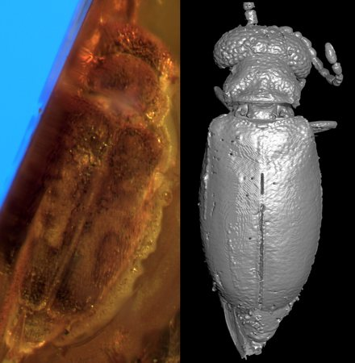

First fossil species of puppet beetles (Coleoptera, Tenebrionoidea, Aderidae) from the lowermost Eocene Oise amber (France), with a review of the fossil record of Aderidae
Describes †Cnopus twentyonepilotorum Ferreira & Nel, 2026 (genus Cnopus Champion, 1893), the first puppet beetle formally described from the c. 53 Ma Oise amber, from synchrotron 3D renderings, and reviews the whole fossil record of the family.
Ferreira, J., Spiessberger, E. L., Nel, A., Patera, A., & Peris, D. (2026). First fossil species of puppet beetles (Coleoptera, Tenebrionoidea, Aderidae) from the lowermost Eocene Oise amber (France), with a review of the fossil record of Aderidae. ZooKeys, 1297, 153–180.
https://doi.org/10.3897/zookeys.1297.210120